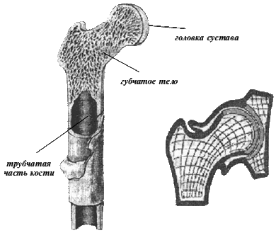
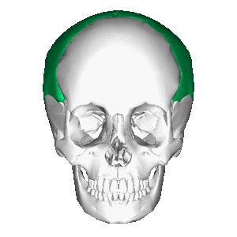

Глава 2. Классификация костей
В скелете различают следующие части: скелет туловища (позвонки, ребра, грудина), скелет головы (кости черепа и лица), кости поясов конечностей – верхней (лопатка, ключица) и нижней (тазовая) и кости свободных конечностей – верхней (плечо, кости предплечья и кисти) и нижней (бедро, кости голени и стопы). Число отдельных костей, входящих в состав скелета взрослого человека, больше 200, из них 36 – 40 расположены по средней линии тела и непарные, остальные – парные кости.
По внешней форме различают кости длинные, короткие, плоские и смешанные. Однако такое установленное еще во времена Галена деление только по одному признаку (внешняя форма) оказывается односторонним и служит примером формализма старой описательной анатомии, вследствие чего совершенно разнородные по своему строению, функции и происхождению кости попадают в одну группу. Так, к группе плоских костей относят и теменную кость, которая является типичной покровной костью, окостеневающей эндесмально, и лопатку, которая служит для опоры и движения, окостеневает на почве хряща и построена из обычного губчатого вещества.
Патологические процессы также протекают совершенно различно в фалангах и костях запястья, хотя и те и другие относятся к коротким костям, или в бедре и ребре, зачисленных в одну группу длинных костей. Поэтому правильнее различать кости на основании 3 принципов, на которых должна быть построена всякая анатомическая классификация: формы (строения), функции и развития.
С этой точки зрения можно наметить следующую классификацию костей (М. Г. Привес):
I. Трубчатые кости. Они построены из губчатого и компактного вещества, образующего трубку с костномозговой полостью; выполняют все 3 функции скелета (опора, защита и движение). Из них длинные трубчатые кости (плечо и кости предплечья, бедро и кости голени) являются стойками и длинными рычагами движения и, кроме диафиза, имеют эндохондральные очаги окостенения в обоих эпифизах (биэпифизарные кости); короткие трубчатые кости (кости пястья, плюсны, фаланги) представляют короткие рычаги движения; из эпифизов эндохондральный очаг окостенения имеется только в одном (истинном) эпифизе (моноэпифизарные кости).
Снаружи трубчатая кость покрыта соединительнотканным слоем – надкостницей. Костный эпифиз представлен преимущественно губчатым костным веществом, содержащим красный костный мозг, диафиз — компактным костным веществом. В центре диафиза проходит костномозговой канал, заполненный (у взрослых) жёлтым костным мозгом, содержащим жировые клетки.

Рис 2.1 Схема строения трубчатой кости
II. Губчатые кости. Построены преимущественно из губчатого вещества, покрытого тонким слоем компактного. Среди них различают длинные губчатые кости (ребра и грудина) и короткие (позвонки, кости запястья, предплюсны). К губчатым костям относятся сесамовидные кости, т. е. похожие на сесамовые зерна растения кунжут, откуда и происходит их название (надколенник, гороховидная кость, сесамовидные кости пальцев руки и ноги); функция их – вспомогательные приспособления для работы мышц; развитие – эндохондральное в толще сухожилий. Сесамовидные кости располагаются около суставов, участвуя в их образовании и способствуя движениям в них, но с костями скелета непосредственно не связаны.
III. Плоские кости:
а) плоские кости черепа (лобная и теменные) выполняют преимущественно защитную функцию. Они построены из 2 тонких пластинок компакт ного вещества, между которыми находится диплоэ, diploe, – губчатое вещество, содержащее каналы для вен. Эти кости развиваются на основе соединительной ткани (покровные кости);

Рис 2.2 Теменная кость
б) плоские кости поясов (лопатка, тазовые кости) выполняют функции опоры и защиты, построены преимущественно из губчатого вещества; развиваются на почве хрящевой ткани.
IV. Смешанные кости (кости основания черепа). К ним относятся кости, сливающиеся из нескольких частей, имеющих разные функцию, строение и развитие. К смешанным костям можно отнести и ключицу, развивающуюся частью эндесмально, частью эндохондрально.